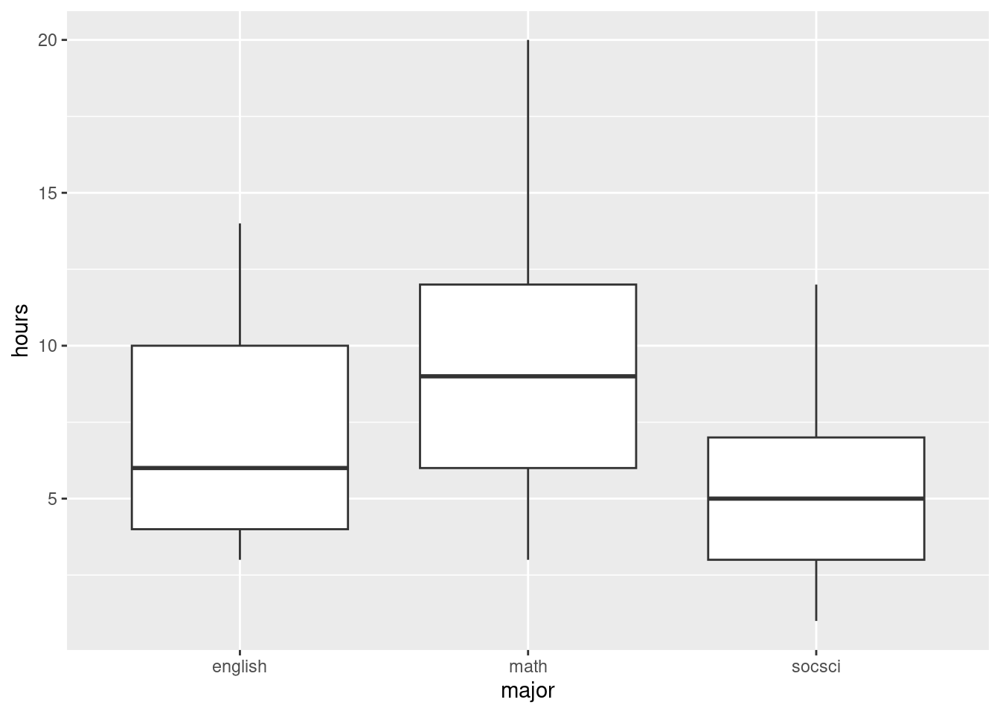
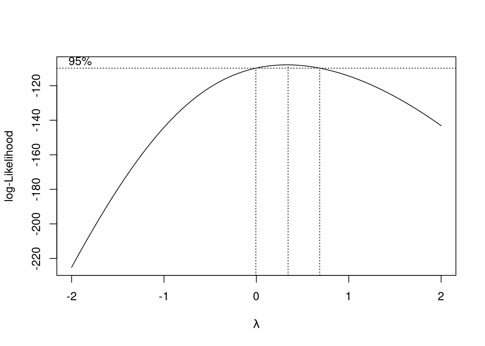

library(MASS)
library(car)
library(tidyverse)31 Analysis of variance revisited
Packages for this chapter:
31.1 Acid rain
One of the first noticeable effects of climate change was “acid rain”. This is formed by the water vapour in clouds combining with nitrous oxide and sulfur dioxide, which come from coal and oil production. How does the acidity of rain affect the acidity of the soil on which it falls? (This will have an effect on the kind of plants that can be grown in that soil.) Acidity is measured using the pH scale, where a pH of 7 is chemically neutral, a number less than 7 is acidic, and a number greater than 7 is alkaline.
An experiment was conducted at the Florida Institute of Food and Agricultural Sciences, to determine how acidity of rain affects soil acidity. Experimental plots were irrigated with rainwater that was prepared to have one of two different pH levels, 3.7 and 4.5. The acidity of the soil was then measured at three different depths, 0–15, 15–30, and 30–46 centimetres. This was done on three different dates, in April and June 1991. The data are in link.
Read in and display the data.
Draw a grouped boxplot to show how soil acidity depends on the pH of the rain and the soil depth. (The first time you do this you might not get the boxplot you want. How can you fix that?)
What does your grouped boxplot say about likely interactions? Explain briefly.
Fit an ANOVA with interaction. What do you conclude from it? You may want to create a column that is the factor version of
rain_pHfirst.
31.2 Treating hay fever
Hay fever is an allergic reaction to things like grasses or pollen which can make it unpleasant to go outside when the weather is at its best. A research lab is developing a new compound to relieve severe cases of hay fever. There were two active ingredients, labelled A and B, with each one having three levels, low, medium and high. There were thus \(3\times 3=9\) treatment combinations. 36 subjects were available, and these were randomly assigned to combinations of levels of factor A and factor B, so that each combination was tested on 4 people. The response variable was the number of hours of relief from symptoms (so a higher value is better). The data are in link.
Read the data and display its structure. Verify that you have what you were expecting.
Calculate the mean hours of relief for each combination of levels of the two active ingredients. Save your results in a data frame and display that.
Make an interaction plot, showing how the mean pain relief depends on the combination of levels of A and B. It is probably easiest to use the data frame you obtained in the previous part.
What do you conclude from your interaction plot? Explain briefly.
Run an analysis of variance with interaction. What do you conclude?
Analyze the simple effects of B when A is
medium. (This means doing an appropriateaovand an appropriate Tukey, if warranted.)Analyze the simple effects of B when A is
high.
31.3 Focused comparisons of the effect of caffeine
Does caffeine help students do better on a certain test? To find out, 36 students were randomly allocated to three groups (12 in each group). Each student received a fixed number of cups of coffee while they were studying, but the students didn’t know whether they were receiving all full-strength coffee (“high”), all decaf coffee (“low”) or a 50-50 mixture of the two (“moderate”). For each subject, their group was recorded as well as their score on the test. The data are in link, as a .csv file.
This time we look at contrasts. Suppose I knew ahead of time that I wanted to compare moderate caffeine with high, and any caffeine with none. (In the latter case, we’re comparing “no caffeine” against the average of the other two groups.)
In the previous go-through of the caffeine data, we discovered that amount was actually text rather than a factor, but we also discovered that it didn’t matter. Here it does matter, so the first thing we have to do is to re-do the pivot_longer, creating a factor version of amount.
Read in the data again, from link, and display it. This is the untidy format, so name it appropriately:
Copy your
pivot_longerfrom before, only this time addnames_ptypes = list(amount=factor())to the end of it. Take a look at the results. What has changed from before?Using the newly tidied caffeine data, run the ANOVA as a regression (that is, using
lm). Look at thesummaryof the output. What do you see?Obtain the different values of
amount, in the order that R has them.Create a contrast that compares High with Moderate, ignoring None. That is, create a vector whose length is the same as the number of levels of
amount, and which has a 1 to represent High and a \(-1\) to represent Moderate.Create a contrast that compares “any caffeine” against “none” by comparing None against the average of Moderate and High.
Verify that your two contrasts are orthogonal.
Arrange your contrasts as columns of a matrix (using
cbind), and say that you want to use these as contrasts foramount(in data framecaffeineor whatever you called it).Fit the ANOVA as an
lm, and look at thesummary. What do you conclude about your contrasts?What happens if you try to use high caffeine vs. moderate caffeine and moderate vs. none as your two contrasts?
31.4 Who studies the most outside class?
A social scientist wanted to see how many hours students studied outside of class. She took a random sample of 75 students from three different majors: math, social science and English, and recorded the number of weekly outside-class study hours for each student. The data can be found at link. The social scientist had two research questions: whether math students study more outside of class than the other students, and whether English and social science students study different amounts of time outside class.
Explain briefly why contrasts would be a better idea here than ANOVA with Tukey.
Read in the data and make side-by-side boxplots of study hours by major. What do the boxplots suggest about the comparisons that the researcher wants to make?
Set up contrasts for each of the researcher’s research questions, bearing in mind the levels of
majorand the order in which they come. (For theMathcontrast, you want Math against the average of the other two.)Verify that your two contrasts are orthogonal.
Create a matrix of contrasts (using
cbind) and letlmknow that these are contrasts formajor, in data framestudyhours(or whatever you called it).Fit the model using
lm. What do you conclude about your contrasts?Are you surprised by the significance or non-significance you found in the previous part? Explain briefly.
31.5 Mental context
It is believed that being in the same mental context for learning and for testing leads to better test scores. An experiment was carried out to test this. During the learning phase, subjects learned a list of 80 words in a room painted orange and decorated with posters, paintings and other paraphernalia.1 A memory test was given to all subjects immediately after they had learned the words, to give the impression that the experiment was over. (The results of this test were discarded.) One day later, subjects were unexpectedly re-tested under different experimental conditions and asked to write down all the words of the original list that they could remember. The re-test took place in five different conditions, which subjects were randomly allocated to one of:
Same context: in the original orange-painted room.
Different context: in a very different room, painted grey and located in a different part of campus.
Imaginary context: in the grey room, but subjects are asked to remember the orange room in which they took the original test. To help them with this, the experimenter begins by asking them several questions about the orange room and the objects in it.
Photographed context: in the grey room, but subjects are shown photographs of the orange room.
Placebo context: in the grey room, with subjects first being asked to recall their living room.
In each case, the response variable was the number of words on the original list successfully recalled by each subject.
50 subjects in total completed the experiment, 10 under each of the 5 conditions.
The researchers had four research hypotheses to test with the data:
Groups where the context matches (is the same, or is simulated by imagining or photograph) will perform better than groups with different or placebo contexts.
The group with the same context will differ from the group with imaginary or photographed contexts.
The imaginary-context group will differ from the photographed-context group.
The different-context group will differ from the placebo-context group.
The research hypotheses are (as is usual) written as alternative hypotheses. We can rewrite them as null hypotheses, with some extra wording to facilitate converting them into contrasts, like this:
The mean of the
same,imaginaryandphotographgroups (group means) is equal to the mean of thedifferentandplacebogroups (group means).The mean of the
imaginaryandphotographgroups is equal to the (mean of the)samegroup.The
imaginaryand thephotographgroups will have the same mean.The
differentand theplacebogroups will have the same mean.
The data are in link (the original researcher’s name was Smith).
Read in the data and verify that you have a column called
contextthat is text and a column calledwordsthat is a (whole) number.Turn
contextinto afactor, within the data frame. (We are going to be doing contrasts). Display how the data frame now looks.What are the names of the five contexts in the data set (just display them), and what order are they in?
Write each of the four research hypotheses (in the null-hypothesis versions) as R vectors that can be used to make contrasts. (This will mean getting the contexts in the right order. If you get stuck, do the last two first, since they’re easiest. The first one is actually the hardest.)
Pick two of your contrasts (doesn’t matter which two) and demonstrate that they are orthogonal.
Collect your contrasts together into a matrix, and tell
lmthat these are the contrasts forcontext.Fit a model with
lm, and display the results.For each of the original research hypotheses, what do you infer about them?
31.6 Trying on shirts
Does it make a difference if you see somebody else trying on a shirt before you do, and if so, does it matter what kind of person it is?
An experiment was carried out in a university bookstore, with students who wanted to try on a shirt serving as (unsuspecting) experimental subjects. When a student wanted to try on a shirt, the sales associate told them that there was only one shirt left, and it was being tried on by an “other customer”. This “other customer” was actually a “confederate” of the experimenter (that means, they were pretending to be a real customer but were actually part of the experiment). The “other customer” was always female: either an attractive well-dressed model, or an average-looking student wearing jeans. The “other customer” would come out of the dressing room and hand the shirt to the sales associate, who would give it to the student who wanted to try it on. When the student had tried on the shirt, they were asked to rate it on a 7-point scale (on five different dimensions, and those five scores were then averaged). Does a student’s evaluation depend on whether the student was male or female, and whether the “other customer” was a model or a student? There was also a control group, where the student was handed the shirt directly by the sales associate, without the “other customer” being involved at all.
There were thus five treatments: male students who saw a model, male students who saw a student, female students who saw a model, female students who saw a student, and the control group. There were 25 students in each treatment group.
The data from this experiment can be found at link.
Read in and display the data. How many observations do you have, and is that what you should have?
Turn
treatmentinto afactorin your data frame. (You can use the same name as the texttreatmentthat you read in from the file.)List the treatments in the order that they are in within your
factor. (There are lots of ways to do this; any one of them except fordistinctis good.)* Obtain a table of mean evaluation scores for each treatment group.
The experimenters wanted to compare four specific things in their analysis:
evaluation scores between male students who saw a (female) model and male students who saw a (female) student
evaluation scores between female students who saw a (female) model and female students who saw a (female) student
evaluation scores for male and for female students (overall)
evaluation scores for the (average of the) four genuine treatments and for the control group
Create contrasts, with suitable names, using vectors with appropriate values.
Pick two of your contrasts (doesn’t matter which two) and demonstrate that they are orthogonal.
Collect all your contrasts together into a matrix and declare that they are contrasts for
treatmentwithin your data frame (whatever you called it).Predict evaluation score from treatment as a regression, and display the results.
For each of your contrasts, assess whether or not it is significant, and explain briefly what that means in the context of the data. If a contrast is significant, use your answer to part (here) to help in your interpretation.
My solutions follow:
31.7 Acid rain
One of the first noticeable effects of climate change was “acid rain”. This is formed by the water vapour in clouds combining with nitrous oxide and sulfur dioxide, which come from coal and oil production. How does the acidity of rain affect the acidity of the soil on which it falls? (This will have an effect on the kind of plants that can be grown in that soil.) Acidity is measured using the pH scale, where a pH of 7 is chemically neutral, a number less than 7 is acidic, and a number greater than 7 is alkaline.
An experiment was conducted at the Florida Institute of Food and Agricultural Sciences, to determine how acidity of rain affects soil acidity. Experimental plots were irrigated with rainwater that was prepared to have one of two different pH levels, 3.7 and 4.5. The acidity of the soil was then measured at three different depths, 0–15, 15–30, and 30–46 centimetres. This was done on three different dates, in April and June 1991. The data are in link.
- Read in and display the data.
Solution
This time, it’s a .csv:
my_url <- "http://ritsokiguess.site/datafiles/acidrain.csv"
acidrain <- read_csv(my_url)Rows: 18 Columns: 4
── Column specification ────────────────────────────────────────────────────────
Delimiter: ","
chr (1): soil_depth
dbl (2): rain_pH, soil_acidity
date (1): date
ℹ Use `spec()` to retrieve the full column specification for this data.
ℹ Specify the column types or set `show_col_types = FALSE` to quiet this message.acidrainThere are 4 columns, soil depth, date, pH of the rain that was applied (all explanatory) and soil acidity, the response. You’ll note that we have one soil acidity value per combination of the other things (it was a designed experiment).
We’re going to ignore the date for now, treating the observations on different dates as replicates.
\(\blacksquare\)
- Draw a grouped boxplot to show how soil acidity depends on the pH of the rain and the soil depth. (The first time you do this you might not get the boxplot you want. How can you fix that?)
Solution
The problem is likely to be that either your x or your fill for your boxplot is numerical (rain_pH is dbl) rather than the categorical variable you need. Try to use one of the explanatory variables as x and the other one as fill (or colour):
ggplot(acidrain, aes(x = rain_pH, y = soil_acidity, fill = soil_depth)) +
geom_boxplot()That looks as if it worked, but it didn’t. See the boxplot below for how it’s supposed to be. I need x for the boxplot needs to be categorical. The easiest way to make it such is to wrap it in factor:
ggplot(acidrain, aes(x = factor(rain_pH), y = soil_acidity, fill = soil_depth)) +
geom_boxplot()Even though soil_depth looks like numbers, the printout of the data frame reveals that it is text, so that is OK.
If you prefer, exchange x and fill:
ggplot(acidrain, aes(fill = factor(rain_pH), y = soil_acidity, x = soil_depth)) +
geom_boxplot()\(\blacksquare\)
- What does your grouped boxplot say about likely interactions? Explain briefly.
Solution
Think about the effect of one of your explanatory variables, for each level of the other. For example, in the last plot, the effect of the rain pH pm on the soil acidity is very small at the largest and smallest depths, but at the middle soil depth 15–30, the average (median) soil acidity is a lot less when the rain pH is higher (which seems odd to me). The effect of rain pH being different according to soil pH is what suggests an interaction effect. Another way of thinking about this is imagining what an interaction plot would look like. This would be a trace going through the middle (strictly, mean rather than median) of each set of boxplots of one colour. In the last boxplot, the red trace would go close to straight across, while the blue one would dip in the middle. Not parallel, so suggesting an interaction. Either approach is good.
\(\blacksquare\)
- Fit an ANOVA with interaction. What do you conclude from it? You may want to create a column that is the factor version of
rain_pHfirst.
Solution
Following my own hint:
acidrain <- acidrain %>% mutate(frph = factor(rain_pH))
soil.1 <- aov(soil_acidity ~ frph * soil_depth, data = acidrain)
summary(soil.1) Df Sum Sq Mean Sq F value Pr(>F)
frph 1 0.0304 0.03042 0.759 0.401
soil_depth 2 0.0671 0.03357 0.838 0.457
frph:soil_depth 2 0.0078 0.00391 0.097 0.908
Residuals 12 0.4810 0.04008 The interaction is nowhere near significant, perhaps surprisingly. But bear in mind that there are only 18 observations in total, so each box on the boxplot is based on three observations only. So the interaction would have to be a lot bigger to be significant.
The usual procedure after finding a non-significant interaction is to take it out:
soil.2 <- update(soil.1, . ~ . - frph:soil_depth)
summary(soil.2) Df Sum Sq Mean Sq F value Pr(>F)
frph 1 0.0304 0.03042 0.871 0.366
soil_depth 2 0.0671 0.03357 0.962 0.406
Residuals 14 0.4888 0.03492 The P-values have come down a bit (the result of gaining two df for error while the error SS only got a tiny bit bigger), but not nearly enough to be significant.
\(\blacksquare\)
31.8 Treating hay fever
Hay fever is an allergic reaction to things like grasses or pollen which can make it unpleasant to go outside when the weather is at its best. A research lab is developing a new compound to relieve severe cases of hay fever. There were two active ingredients, labelled A and B, with each one having three levels, low, medium and high. There were thus \(3\times 3=9\) treatment combinations. 36 subjects were available, and these were randomly assigned to combinations of levels of factor A and factor B, so that each combination was tested on 4 people. The response variable was the number of hours of relief from symptoms (so a higher value is better). The data are in link.
- Read the data and display its structure. Verify that you have what you were expecting.
Solution
Aligned columns separated by spaces, so read_table:
my_url <- "http://ritsokiguess.site/datafiles/hayfever.txt"
hayfever <- read_table(my_url)
── Column specification ────────────────────────────────────────────────────────
cols(
relief = col_double(),
a = col_character(),
b = col_character(),
replicate = col_double()
)hayfeverI have 36 observations (patients). There are two categorical columns a and b corresponding to the two active ingredients, and they each seem to have levels low, medium and high.2
The replicate column labels each observation within its A-B combination, so that each treatment combination was indeed replicated four times. We won’t be using this column in our analysis; I think it’s a refugee from the original untidy format the data was in before it came to you.
\(\blacksquare\)
- Calculate the mean hours of relief for each combination of levels of the two active ingredients. Save your results in a data frame and display that.
Solution
This is a group-by and summarize, but there are two active ingredients and they both have to go in the group-by:
hayfever %>%
group_by(a, b) %>%
summarize(m = mean(relief)) -> d`summarise()` has grouped output by 'a'. You can override using the `.groups`
argument.dI’m using my usual name d for a temporary data frame. I could have put brackets around my whole pipeline to display its result, but I still need to save the data frame d to use in a moment.
These levels are in the wrong logical order, but they are in the right order in the original data frame, so we can use fct_inorder first, thus:
hayfever %>%
mutate(a = fct_inorder(a), b = fct_inorder(b)) %>%
group_by(a, b) %>%
summarize(m = mean(relief)) -> d2`summarise()` has grouped output by 'a'. You can override using the `.groups`
argument.d2\(\blacksquare\)
- Make an interaction plot, showing how the mean pain relief depends on the combination of levels of A and B. It is probably easiest to use the data frame you obtained in the previous part.
Solution
My column of mean relief values is called m. Use whatever name you gave it. I’m going to use my proper-order data frame for this:
ggplot(d2, aes(x = a, y = m, colour = b, group = b)) +
geom_point() + geom_line()Or, you probably had this:
ggplot(d, aes(x = a, y = m, colour = b, group = b)) +
geom_point() + geom_line()Since a and b both have three levels, you could just as well use them the other way around:
ggplot(d2, aes(x = b, y = m, colour = a, group = a)) +
geom_point() + geom_line()The plot looks different depending on how you draw it, but the conclusion from it (below) will be the same.
\(\blacksquare\)
- What do you conclude from your interaction plot? Explain briefly.
Solution
The three lines are not particularly close to being parallel, so I would expect to see an interaction between the two active ingredients (that is, the number of hours of pain relief depends on the combination of the two of them).
Extra: It is always a judgment call to decide whether the lines are “approximately parallel” or not. It depends on how much variability there is in the data, which the interaction plot doesn’t show. Another idea is to add the data to the interaction plot, colour-coded in the same way. I would do this by taking out the geom_point for the means and add one instead for the data, taken from the original data frame:
ggplot(d2, aes(x = a, y = m, colour = b, group = b)) +
geom_line() +
geom_point(data = hayfever, aes(y = relief))Technique: for that last geom_point, put in anything that changes: a new data frame, and a new y for the plot, but the x and colour and group are the same as they were before, so I don’t need to specify them.
The points are very close to the lines, so there is almost no residual variability. This makes it more convincing that the interaction is real and will be significant.
\(\blacksquare\)
- Run an analysis of variance with interaction. What do you conclude?
Solution
hayfever.1 <- aov(relief ~ a * b, data = hayfever)
summary(hayfever.1) Df Sum Sq Mean Sq F value Pr(>F)
a 2 220.02 110.01 1827.9 <2e-16 ***
b 2 123.66 61.83 1027.3 <2e-16 ***
a:b 4 29.42 7.36 122.2 <2e-16 ***
Residuals 27 1.63 0.06
---
Signif. codes: 0 '***' 0.001 '**' 0.01 '*' 0.05 '.' 0.1 ' ' 1The interaction is (strongly) significant. The hours of relief depend on the combination of levels of the active ingredients A and B.
Don’t try to interpret the main effects of A and B from here. That’s what simple effects are for, coming up.
\(\blacksquare\)
- Analyze the simple effects of B when A is
medium. (This means doing an appropriateaovand an appropriate Tukey, if warranted.)
Solution
First, we pull out only the data where A is medium, and then we do a one-way analysis of B on that data. This is the slick way, though you can certainly save the result of filter first:
hayfever %>%
filter(a == "medium") %>%
aov(relief ~ b, data = .) -> simple_medium
summary(simple_medium) Df Sum Sq Mean Sq F value Pr(>F)
b 2 34.16 17.081 262.8 1.04e-08 ***
Residuals 9 0.59 0.065
---
Signif. codes: 0 '***' 0.001 '**' 0.01 '*' 0.05 '.' 0.1 ' ' 1There is definitely some effect of ingredient B when A is medium. What is it? Tukey will tell us:
TukeyHSD(simple_medium) Tukey multiple comparisons of means
95% family-wise confidence level
Fit: aov(formula = relief ~ b, data = .)
$b
diff lwr upr p adj
low-high -3.675 -4.178336 -3.171664 0.0000000
medium-high -0.200 -0.703336 0.303336 0.5323662
medium-low 3.475 2.971664 3.978336 0.0000000There is no difference between medium and high (levels of B), but both of these are better in terms of relief than low is.
\(\blacksquare\)
- Analyze the simple effects of B when A is
high.
Solution
Same idea: pull out only the data where A is high, do a one-way analysis of B, and do Tukey if needed:
hayfever %>%
filter(a == "high") %>%
aov(relief ~ b, data = .) -> simple_high
summary(simple_high) Df Sum Sq Mean Sq F value Pr(>F)
b 2 107.02 53.51 796 7.49e-11 ***
Residuals 9 0.61 0.07
---
Signif. codes: 0 '***' 0.001 '**' 0.01 '*' 0.05 '.' 0.1 ' ' 1TukeyHSD(simple_high) Tukey multiple comparisons of means
95% family-wise confidence level
Fit: aov(formula = relief ~ b, data = .)
$b
diff lwr upr p adj
low-high -7.275 -7.786868 -6.763132 0e+00
medium-high -2.975 -3.486868 -2.463132 2e-07
medium-low 4.300 3.788132 4.811868 0e+00When A is high, there is definitely an effect of B again, but this time high (for B) is better than medium is better than low. (All the P-values in Tukey are very small.)
You could guess this from the interaction plot as well (whichever one you came up with): when A is high, it is better for B to be high as well, but when A is medium or low, there is not much difference between B being medium or high.
Extra: here, the effect of B is different, depending on what A is. This is what a significant interaction means. If there were no significant interaction, the effect of B would always be the same, no matter what A was.
\(\blacksquare\)
31.9 Focused comparisons of the effect of caffeine
Does caffeine help students do better on a certain test? To find out, 36 students were randomly allocated to three groups (12 in each group). Each student received a fixed number of cups of coffee while they were studying, but the students didn’t know whether they were receiving all full-strength coffee (“high”), all decaf coffee (“low”) or a 50-50 mixture of the two (“moderate”). For each subject, their group was recorded as well as their score on the test. The data are in link, as a .csv file.
This time we look at contrasts. Suppose I knew ahead of time that I wanted to compare moderate caffeine with high, and any caffeine with none. (In the latter case, we’re comparing “no caffeine” against the average of the other two groups.)
In the previous go-through of the caffeine data, we discovered that amount was actually text rather than a factor, but we also discovered that it didn’t matter. Here it does matter, so the first thing we have to do is to re-do the pivot_longer, creating a factor version of amount.
- Read in the data again, from link, and display it. This is the untidy format, so name it appropriately:
Solution
my_url <- "http://individual.utoronto.ca/kbutler/stad29/caffeine.csv"
caffeine.untidy <- read_csv(my_url)Rows: 12 Columns: 4
── Column specification ────────────────────────────────────────────────────────
Delimiter: ","
dbl (4): Sub, High, Moderate, None
ℹ Use `spec()` to retrieve the full column specification for this data.
ℹ Specify the column types or set `show_col_types = FALSE` to quiet this message.caffeine.untidyOne caffeine level per column, rather than a column of caffeine levels, so untidy.
\(\blacksquare\)
- Copy your
pivot_longerfrom before, only this time addnames_ptypes = list(amount=factor())to the end of it. Take a look at the results. What has changed from before?
Solution
We’ll save into caffeine again:
caffeine.untidy %>%
pivot_longer(-Sub, names_to="amount", values_to="score",
names_ptypes = list(amount=factor())) -> caffeine
caffeineThe variable created for the “names” is now a factor: it was text before. Maybe we should have made it a factor before (it wouldn’t have done any harm), but we got away with not doing so.
\(\blacksquare\)
- Using the newly tidied caffeine data, run the ANOVA as a regression (that is, using
lm). Look at thesummaryof the output. What do you see?
Solution
Extra: I’m going to run the ANOVA the “old way” first, so that we can compare results. You don’t need to do this:
caffeine.old <- aov(score ~ amount, data = caffeine)
summary(caffeine.old) Df Sum Sq Mean Sq F value Pr(>F)
amount 2 477.7 238.86 3.986 0.0281 *
Residuals 33 1977.5 59.92
---
Signif. codes: 0 '***' 0.001 '**' 0.01 '*' 0.05 '.' 0.1 ' ' 1TukeyHSD(caffeine.old) Tukey multiple comparisons of means
95% family-wise confidence level
Fit: aov(formula = score ~ amount, data = caffeine)
$amount
diff lwr upr p adj
Moderate-High -4.750000 -12.50468 3.004679 0.3025693
None-High -8.916667 -16.67135 -1.161987 0.0213422
None-Moderate -4.166667 -11.92135 3.588013 0.3952176End of digression.
Now we’ll do it using lm, with contrasts later, and see how things change:
caffeine.2 <- lm(score ~ amount, data = caffeine)
summary(caffeine.2)
Call:
lm(formula = score ~ amount, data = caffeine)
Residuals:
Min 1Q Median 3Q Max
-11.833 -6.958 -2.458 6.354 15.167
Coefficients:
Estimate Std. Error t value Pr(>|t|)
(Intercept) 76.833 2.235 34.383 < 2e-16 ***
amountModerate -4.750 3.160 -1.503 0.14234
amountNone -8.917 3.160 -2.821 0.00803 **
---
Signif. codes: 0 '***' 0.001 '**' 0.01 '*' 0.05 '.' 0.1 ' ' 1
Residual standard error: 7.741 on 33 degrees of freedom
Multiple R-squared: 0.1946, Adjusted R-squared: 0.1458
F-statistic: 3.986 on 2 and 33 DF, p-value: 0.02815Look at the slopes. They are amount followed by one of the amounts of caffeine. R is using “high” as a baseline (that’s the first level alphabetically), so the amountModerate line is testing high vs. moderate: high is not significantly higher, in terms of test scores, than moderate. That’s one of the things I wanted to test. What about the coefficient for amountNone? That’s none vs. high, since high was the baseline. This is, as we saw from Tukey, significant. But it is not what I said we wanted to test.
Extra: in case you’re curious, you can also get the regular analysis of variance table as below. anova is multi-talented:
anova(caffeine.2)The problem is that you can’t naturally do Tukey this way, which is often what you want to do next. That’s why we used aov before.
Since we have a regression model (albeit a peculiar one), we can test whether we should remove amount (that is, whether it has any impact on test scores) this way too:
drop1(caffeine.2, test = "F")Same conclusion: there is some effect of caffeine level on test score.
\(\blacksquare\)
- Obtain the different values of
amount, in the order that R has them.
Solution
Count them, or find the distinct ones:
caffeine %>% group_by(amount) %>% summarize(count = n())or there is this shortcut to the above:
caffeine %>% count(amount)Or
caffeine %>% distinct(amount)since we didn’t really need to know how many of each there were.
These would all have worked if amount had been text rather a factor. If you have a genuine factor, you can also ask for its levels:
with(caffeine, levels(amount))[1] "High" "Moderate" "None" or summary will count them up and list them:
caffeine %>% select(amount) %>% summary() amount
High :12
Moderate:12
None :12 This last won’t work if you have a categorical-variable-as-text. It has to be a genuine factor for it to work.
The categories are High, Moderate and None in that order. For working with contrasts, we need to have the thing we’re making contrasts for (see below) as a factor, otherwise it won’t work.
\(\blacksquare\)
- Create a contrast that compares High with Moderate, ignoring None. That is, create a vector whose length is the same as the number of levels of
amount, and which has a 1 to represent High and a \(-1\) to represent Moderate.
Solution
Put a 0 in for None:
c.hm <- c(1, -1, 0)Having the 1 and the \(-1\) the other way around would also have been fine.
\(\blacksquare\)
- Create a contrast that compares “any caffeine” against “none” by comparing None against the average of Moderate and High.
Solution
c.any <- c(-0.5, -0.5, 1)Note that both our contrasts have coefficients that add up to zero, as they must:
sum(c.hm)[1] 0sum(c.any)[1] 0\(\blacksquare\)
- Verify that your two contrasts are orthogonal.
Solution
Multiply them together and check that what you get adds up to zero:
sum(c.hm * c.any)[1] 0Zero, so orthogonal. You can check that writing c.any as c(-1,-1,2) would also work (and still be orthogonal with c.hm), and so would writing it as c(1,1,-2).
\(\blacksquare\)
- Arrange your contrasts as columns of a matrix (using
cbind), and say that you want to use these as contrasts foramount(in data framecaffeineor whatever you called it).
Solution
m <- cbind(c.hm, c.any)
contrasts(caffeine$amount) <- m\(\blacksquare\)
- Fit the ANOVA as an
lm, and look at thesummary. What do you conclude about your contrasts?
Solution
caff.3 <- lm(score ~ amount, data = caffeine)
summary(caff.3)
Call:
lm(formula = score ~ amount, data = caffeine)
Residuals:
Min 1Q Median 3Q Max
-11.833 -6.958 -2.458 6.354 15.167
Coefficients:
Estimate Std. Error t value Pr(>|t|)
(Intercept) 72.278 1.290 56.022 <2e-16 ***
amountc.hm 2.375 1.580 1.503 0.1423
amountc.any -4.361 1.825 -2.390 0.0227 *
---
Signif. codes: 0 '***' 0.001 '**' 0.01 '*' 0.05 '.' 0.1 ' ' 1
Residual standard error: 7.741 on 33 degrees of freedom
Multiple R-squared: 0.1946, Adjusted R-squared: 0.1458
F-statistic: 3.986 on 2 and 33 DF, p-value: 0.02815c.hm was the contrast between high and moderate caffeine. This is not significant (P-value 0.142), which is the same conclusion as Tukey, but the P-value here is quite a bit lower (and thus closer to being significant). There’s a reason for that: here we are focusing in on the two contrasts that we really wanted to test, and ignoring the \(F\)-test and the Tukey that tell us stuff that we don’t care about. By focusing our comparison, we get a better (smaller) P-value.
c.any was none vs. average of any caffeine. This one is significant, with a P-value of 0.023. So this contrast tells us that having any caffeine is better than having none.
\(\blacksquare\)
- What happens if you try to use high caffeine vs. moderate caffeine and moderate vs. none as your two contrasts?
Solution
c.hm <- c(1, -1, 0)
c.mn <- c(0, 1, -1)So far so good: the coefficients add up to zero and they reflect the right comparisons. But now:
sum(c.hm * c.mn)[1] -1This does not add up to zero, so these two contrasts are not orthogonal, and we can’t do what we just did. R will give us an answer if we try it, but it’ll be the wrong answer.3
The best description I have seen of what to do here is by David Howell,4 at link (at the bottom). Let me try to follow his method.
First we need a vector that is all 1’s, which I have called c0 below. Since each of our contrasts c.hm and c.mn have 3 things in them (3 groups), we need to add a “dummy” 3rd contrast to give us a \(3\times 3\) array of numbers:5
c0 <- rep(1, 3)
m <- cbind(c0, c.hm, c.mn)
m c0 c.hm c.mn
[1,] 1 1 0
[2,] 1 -1 1
[3,] 1 0 -1This is what Howell calls an “augmented” matrix of contrasts, since it has our two contrasts as the second and third columns, plus the extra dummy one. Next we invert this matrix of contrasts, which we can do because it’s square. t(m) means “take the matrix transpose of m”, if you’re trying to keep up at the back, and solve finds a matrix inverse:
minv <- solve(t(m))and then we remove the first column, which represents the contrast that we didn’t want anyway (what Howell calls “deaugmenting”):6
m.contr <- minv[, -1]
m.contr c.hm c.mn
[1,] 0.6666667 0.3333333
[2,] -0.3333333 0.3333333
[3,] -0.3333333 -0.6666667contrasts(caffeine$amount) <- m.contrThe columns of m.contr are our new contrasts. Note that they appear to be something else: high vs. the average of moderate and none, and none vs. the average of moderate and high. They are actually not orthogonal, but if Howell is to be trusted,7 they can be used to test what we want. Now fit the model again:
caff.4 <- lm(score ~ amount, data = caffeine)
summary(caff.4)
Call:
lm(formula = score ~ amount, data = caffeine)
Residuals:
Min 1Q Median 3Q Max
-11.833 -6.958 -2.458 6.354 15.167
Coefficients:
Estimate Std. Error t value Pr(>|t|)
(Intercept) 72.278 1.290 56.022 <2e-16 ***
amountc.hm 4.750 3.160 1.503 0.142
amountc.mn 4.167 3.160 1.318 0.196
---
Signif. codes: 0 '***' 0.001 '**' 0.01 '*' 0.05 '.' 0.1 ' ' 1
Residual standard error: 7.741 on 33 degrees of freedom
Multiple R-squared: 0.1946, Adjusted R-squared: 0.1458
F-statistic: 3.986 on 2 and 33 DF, p-value: 0.02815The rows amountc.hm and amountc.mn are the proper tests for our contrasts c.hm and c.mn. c.hm is not significant (P-value 0.14) and c.mn is not significant either (P-value 0.20). This is the same significance as from Tukey, but note that the P-values for the non-significant tests are much lower than the corresponding ones from Tukey, once again because we have focused on just these comparisons, and not on any others. We decided ahead of time to test just these, and gave ourselves the best chance of finding significance that we could.
\(\blacksquare\)
31.10 Who studies the most outside class?
A social scientist wanted to see how many hours students studied outside of class. She took a random sample of 75 students from three different majors: math, social science and English, and recorded the number of weekly outside-class study hours for each student. The data can be found at link. The social scientist had two research questions: whether math students study more outside of class than the other students, and whether English and social science students study different amounts of time outside class.
- Explain briefly why contrasts would be a better idea here than ANOVA with Tukey.
Solution
The researcher is not interested in all the comparisons between the groups, but rather in two specific ones (as detailed in the question). So we should focus our attention on those comparisons. This is what contrasts are for.
\(\blacksquare\)
- Read in the data and make side-by-side boxplots of study hours by major. What do the boxplots suggest about the comparisons that the researcher wants to make?
Solution
Separated by one space. There appear to be some strange quotes in there, but we’ll ignore those and see whether they cause any trouble:
my_url <- "http://ritsokiguess.site/datafiles/studyhours.txt"
studyhours <- read_delim(my_url, " ")Rows: 75 Columns: 3
── Column specification ────────────────────────────────────────────────────────
Delimiter: " "
chr (1): major
dbl (2): id, hours
ℹ Use `spec()` to retrieve the full column specification for this data.
ℹ Specify the column types or set `show_col_types = FALSE` to quiet this message.studyhoursSo far so good. 75 students, in tidy format.
ggplot(studyhours, aes(x = major, y = hours)) + geom_boxplot()
This suggests that the math students study more than the others, but the English and social science students study about the same amount.
I see some rather consistent right-skewness here (but no outliers). We have 25 observations in each group, a decent amount of data, so I’m not too worried, but a transformation could be a good idea, something like square root, perhaps. The spreads are not that unequal, but it is true that the Math students have both the largest median and the largest spread, and the social science students are the lowest on both.
Extra: Box-Cox also works on ANOVA-type data, since that is an lm kind of model:
boxcox(hours ~ major, data = studyhours)
This suggests that some kind of transformation would be a good idea (no transformation, power 1, is not supported by the data). My guess of 0.5 is not bad; that, or something a bit less like 0.25 (fourth root) would be good. Even log is supportable. But we’ll proceed without transformation in this question to give you some practice with contrasts. Despite appearances, I do (sometimes) like to make things not so complicated!
\(\blacksquare\)
- Set up contrasts for each of the researcher’s research questions, bearing in mind the levels of
majorand the order in which they come. (For theMathcontrast, you want Math against the average of the other two.)
Solution
We need to know what the categories of major are, so that we can set up the contrasts correctly, so let’s start with that:
studyhours %>% select(major) %>% summary() major
Length:75
Class :character
Mode :character Oh. Yeah. We never turned major into a factor. We’d better do that, and then try again:
studyhours <- studyhours %>% mutate(major = factor(major))
studyhours %>% select(major) %>% summary() major
english:25
math :25
socsci :25 In alphabetical order.
All right, contrasts. The English vs. social science one is easier, so we’ll do that first. Just set it up with a 1 for one of them and a \(-1\) for the other and 0 for math, in the right order according to what the levels are, viz:
c.eng.socsci <- c(1, 0, -1)Or c(-1,0,1) would be just as good.
The other one is a bit trickier, because you want math against the average of the others, like \[\mbox{math}-(\mbox{English}+\mbox{socsci})/2.\] This translates into contrast-ese like this, making sure to get Math in the middle where it belongs:8
c.math.others <- c(-0.5, 1, -0.5)The coefficients have to add up to zero, so I have to have two halves to balance my one 1. Or I can use two \(-1\)s and a 2.
\(\blacksquare\)
- Verify that your two contrasts are orthogonal.
Solution
Multiply them together (elementwise, which is how R does it) and show that what you get adds up to zero:
sum(c.eng.socsci * c.math.others)[1] 0Zero. Orthogonal.
So we are safely in “familiar” territory, not in the here-be-dragons9 land of non-orthogonal contrasts.
\(\blacksquare\)
- Create a matrix of contrasts (using
cbind) and letlmknow that these are contrasts formajor, in data framestudyhours(or whatever you called it).
Solution
So, like the example in lecture (where the contrasts(model) was admittedly rather confusing):
m <- cbind(c.math.others, c.eng.socsci)
m c.math.others c.eng.socsci
[1,] -0.5 1
[2,] 1.0 0
[3,] -0.5 -1contrasts(studyhours$major) <- m\(\blacksquare\)
- Fit the model using
lm. What do you conclude about your contrasts?
Solution
Pretend the ANOVA is a regression (though you can fit ANOVAs either way: we just used aov before because we were going to follow up with Tukey):
studyhours.1 <- lm(hours ~ major, data = studyhours)
summary(studyhours.1)
Call:
lm(formula = hours ~ major, data = studyhours)
Residuals:
Min 1Q Median 3Q Max
-6.44 -2.48 -0.48 2.52 10.56
Coefficients:
Estimate Std. Error t value Pr(>|t|)
(Intercept) 7.3200 0.3980 18.392 < 2e-16 ***
majorc.math.others 2.1200 0.5628 3.767 0.000335 ***
majorc.eng.socsci 0.7800 0.4874 1.600 0.113936
---
Signif. codes: 0 '***' 0.001 '**' 0.01 '*' 0.05 '.' 0.1 ' ' 1
Residual standard error: 3.447 on 72 degrees of freedom
Multiple R-squared: 0.1887, Adjusted R-squared: 0.1662
F-statistic: 8.374 on 2 and 72 DF, p-value: 0.0005375There is a seriously significant difference between the math students and the others. There is not, however, any kind of difference between the mean study hours of the English and social science students.
\(\blacksquare\)
- Are you surprised by the significance or non-significance you found in the previous part? Explain briefly.
Solution
Go back and compare with the boxplots. The math students studied noticeably more than the others, so it is not surprising that this difference came out significant. The median study times for the English and social science students were similar, so it is not at all surprising that this difference failed to be significant.
When you set up contrasts, these are the tests you are interested in, so there is no reason for following up with Tukey or anything else. But you have to be able to say ahead of time which contrasts you want to test. This is in contrast10 to Tukey, where you don’t have to decide which comparisons interest you until right at the end.
Another question you might have had is “how many contrasts can I do”? To answer this, go back and look at the ANOVA table. If you run an ANOVA using lm, you get the ANOVA table by passing the fitted model object into anova rather than summary:11
anova(studyhours.1)Two degrees of freedom for major, so we can do 2 contrasts. (The example in class had four models of chainsaw, so 3 df for model, so 3 contrasts possible.) What if we don’t use all those contrasts up? Try it and see:
m <- cbind(c.math.others)
m c.math.others
[1,] -0.5
[2,] 1.0
[3,] -0.5contrasts(studyhours$major) <- m
studyhours.2 <- lm(hours ~ major, data = studyhours)
summary(studyhours.2)
Call:
lm(formula = hours ~ major, data = studyhours)
Residuals:
Min 1Q Median 3Q Max
-6.44 -2.48 -0.48 2.52 10.56
Coefficients:
Estimate Std. Error t value Pr(>|t|)
(Intercept) 7.3200 0.3980 18.392 < 2e-16 ***
majorc.math.others 2.1200 0.5628 3.767 0.000335 ***
major -1.1031 0.6893 -1.600 0.113936
---
Signif. codes: 0 '***' 0.001 '**' 0.01 '*' 0.05 '.' 0.1 ' ' 1
Residual standard error: 3.447 on 72 degrees of freedom
Multiple R-squared: 0.1887, Adjusted R-squared: 0.1662
F-statistic: 8.374 on 2 and 72 DF, p-value: 0.0005375The two P-values are identical, but the second one is not now identified with any contrast (so we just ignore it). If we were only interested in how math students compared with the rest, we could test it this way.
Or, we could relabel the students as “math” and “other” and just do a two-sample \(t\)-test. To do this, we need to delve into forcats (which is a part of the tidyverse). It deals with categorical variables which are genuine factors, which we haven’t had much cause to do so far. But now we do. What we want to do is to recode the levels of major, which is done by fct_recode:
studyhoursx <- studyhours %>%
mutate(mathrest = fct_recode(major,
"rest" = "english",
"rest" = "socsci"
))
studyhoursx %>% count(mathrest)The way fct_recode works is that you first give a factor, here major, then you define a list of new levels in terms of the old ones. We want a student whose major is either English or Social Science to end up in the new not-math group that we’ll call rest, so we need two lines inside fct_recode, one that says that the new rest group includes the old english majors, and another that says that rest also includes the old socsci majors. Any levels not mentioned (here math) are left unchanged.
I did this wrong the first time: I got the things before and after the = in fct_recode the wrong way around.
The last line is to check that the result makes sense. I previously had 25 students in each major. Now I have 25 students for whom mathrest is math (the math majors) and \(50=25+25\) students for whom mathrest is rest (everyone else).
Now, the \(t\)-test.
t.test(hours ~ mathrest, data = studyhoursx, var.equal = T)
Two Sample t-test
data: hours by mathrest
t = -3.7269, df = 73, p-value = 0.0003796
alternative hypothesis: true difference in means between group rest and group math is not equal to 0
95 percent confidence interval:
-4.880528 -1.479472
sample estimates:
mean in group rest mean in group math
6.26 9.44 This is very close to, but not the same as, the test with the contrasts, because we are not quite testing the same thing. Here, we are comparing the mean of the math students to the mean of everyone else, thrown together into one big bag, but with the contrasts, we are comparing the mean of the math students with the average of the means of the other two groups, treating them as different. (Not clear? Well, it’s not that clear to me either.)
That business with the var.equal=T? This is doing a pooled \(t\)-test. I did that here because the ANOVA is assuming equal spreads within the groups (which is what a pooled \(t\)-test does) and I thought I should do my best to be consistent. A pooled \(t\)-test is really a two-group one-way ANOVA, or at least it is if it is done two-sided.
\(\blacksquare\)
31.11 Mental context
It is believed that being in the same mental context for learning and for testing leads to better test scores. An experiment was carried out to test this. During the learning phase, subjects learned a list of 80 words in a room painted orange and decorated with posters, paintings and other paraphernalia.12 A memory test was given to all subjects immediately after they had learned the words, to give the impression that the experiment was over. (The results of this test were discarded.) One day later, subjects were unexpectedly re-tested under different experimental conditions and asked to write down all the words of the original list that they could remember. The re-test took place in five different conditions, which subjects were randomly allocated to one of:
Same context: in the original orange-painted room.
Different context: in a very different room, painted grey and located in a different part of campus.
Imaginary context: in the grey room, but subjects are asked to remember the orange room in which they took the original test. To help them with this, the experimenter begins by asking them several questions about the orange room and the objects in it.
Photographed context: in the grey room, but subjects are shown photographs of the orange room.
Placebo context: in the grey room, with subjects first being asked to recall their living room.
In each case, the response variable was the number of words on the original list successfully recalled by each subject.
50 subjects in total completed the experiment, 10 under each of the 5 conditions.
The researchers had four research hypotheses to test with the data:
Groups where the context matches (is the same, or is simulated by imagining or photograph) will perform better than groups with different or placebo contexts.
The group with the same context will differ from the group with imaginary or photographed contexts.
The imaginary-context group will differ from the photographed-context group.
The different-context group will differ from the placebo-context group.
The research hypotheses are (as is usual) written as alternative hypotheses. We can rewrite them as null hypotheses, with some extra wording to facilitate converting them into contrasts, like this:
The mean of the
same,imaginaryandphotographgroups (group means) is equal to the mean of thedifferentandplacebogroups (group means).The mean of the
imaginaryandphotographgroups is equal to the (mean of the)samegroup.The
imaginaryand thephotographgroups will have the same mean.The
differentand theplacebogroups will have the same mean.
The data are in link (the original researcher’s name was Smith).
- Read in the data and verify that you have a column called
contextthat is text and a column calledwordsthat is a (whole) number.
Solution
The usual thing — read in the data appropriately and look at the data frame you got:
my_url <- "http://ritsokiguess.site/datafiles/smith.txt"
smith <- read_delim(my_url, " ")Rows: 50 Columns: 3
── Column specification ────────────────────────────────────────────────────────
Delimiter: " "
chr (1): context
dbl (2): id, words
ℹ Use `spec()` to retrieve the full column specification for this data.
ℹ Specify the column types or set `show_col_types = FALSE` to quiet this message.smithdbl actually means “decimal number”, but these look like whole numbers, so I think we are good.
\(\blacksquare\)
- Turn
contextinto afactor, within the data frame. (We are going to be doing contrasts). Display how the data frame now looks.
Solution
Use mutate and assign everything back to what it was before:
smith <- smith %>% mutate(context = factor(context))
smithNote that context is now labelled as the factor that we made.
\(\blacksquare\)
- What are the names of the five contexts in the data set (just display them), and what order are they in?
Solution
You have lots of choices now, since context is a factor (and can also be treated as text). The most obvious factor-based way is this:
levels(smith$context)[1] "different" "imaginary" "photograph" "placebo" "same" or use summary:
smith %>% select(context) %>% summary() context
different :10
imaginary :10
photograph:10
placebo :10
same :10 Or treat context as text, such as this way:
smith %>% count(context)These all display the contexts in alphabetical order.
Or display the distinct values:
smith %>% distinct(context)or, without using the tidyverse,
unique(smith$context)[1] same different imaginary photograph placebo
Levels: different imaginary photograph placebo sameThese two don’t display things in alphabetical order, because they display things as they appear in the file. This is not the order we want, though the second way does display the Levels in the right order.
\(\blacksquare\)
- Write each of the four research hypotheses (in the null-hypothesis versions) as R vectors that can be used to make contrasts. (This will mean getting the contexts in the right order. If you get stuck, do the last two first, since they’re easiest. The first one is actually the hardest.)
Solution
All right, let’s go from the bottom:
- Different and placebo have same means. These are 1st and 4th.
c4 <- c(1, 0, 0, -1, 0)- Imaginary and photograph have same means. 2nd and 3rd:
c3 <- c(0, 1, -1, 0, 0)- Imaginary and photograph together same as
same. This time we have two means being compared with one, so we need to give the two means half weight. 2nd and 3rd against 5th:
c2 <- c(0, 1 / 2, 1 / 2, 0, -1)- (Same and imaginary and photograph) vs. (different or placebo): 2nd, 3rd and 5th with weight \(1/3\) (three of them) against 1st and 4th with weight \(1/2\) (2 of them):
c1 <- c(-1 / 2, 1 / 3, 1 / 3, -1 / 2, 1 / 3)Variations: you can switch the sign on everything within a contrast (since it doesn’t matter which is plus and which is minus). You can also multiply through by anything to get rid of the fractions, for example these:
c2 <- c(0, 1, 1, 0, -2)
c1 <- c(-3, 2, 2, -3, 2)All that matters is that the coefficients add up to zero, and that they are the right size and sign relative to each other.
\(\blacksquare\)
- Pick two of your contrasts (doesn’t matter which two) and demonstrate that they are orthogonal.
Solution
Multiply your chosen contrasts together elementwise, and show that the results add to zero, eg. by showing the whole thing:
c1 * c2[1] 0.0000000 0.1666667 0.1666667 0.0000000 -0.3333333which adds to zero because it is \(2/6\) minus \(1/3\), or by explicitly summing the elementwise product:
sum(c1 * c3)[1] 0Any pair is good.
\(\blacksquare\)
- Collect your contrasts together into a matrix, and tell
lmthat these are the contrasts forcontext.
Solution
This:
m <- cbind(c1, c2, c3, c4)
contrasts(smith$context) <- mSlipping off into another aside, you might have been wondering whether there was a way to test all the contrasts for orthogonality at once. There is, and it depends on the rules for matrix multiplication. We want to test all the columns of m for orthogonality, but matrix multiplication works by combining a row with a column. No matter, transposing a matrix interchanges rows and columns, so that in math, we want to look at the matrix \(M^T M\). In R, %*% means “matrix multiply”.13 Thus,
t(m) %*% m c1 c2 c3 c4
c1 0.8333333 0.0 0 0
c2 0.0000000 1.5 0 0
c3 0.0000000 0.0 2 0
c4 0.0000000 0.0 0 2This matrix-multiplies the transpose of m by m itself. There are numbers down the top-left to bottom-right diagonal, but don’t worry about these, since a contrast doesn’t have to be orthogonal with itself. The thing to note is that all the other elements of this matrix are zero: that means that each of the four contrasts is orthogonal to each of the other three.
\(\blacksquare\)
- Fit a model with
lm, and display the results.
Solution
We’re past the hard part:
smith.1 <- lm(words ~ context, data = smith)
summary(smith.1)
Call:
lm(formula = words ~ context, data = smith)
Residuals:
Min 1Q Median 3Q Max
-9.0 -4.0 -1.5 4.6 11.6
Coefficients:
Estimate Std. Error t value Pr(>|t|)
(Intercept) 14.8000 0.8129 18.207 < 2e-16 ***
contextc1 8.6000 1.9912 4.319 8.52e-05 ***
contextc2 -0.3333 1.4841 -0.225 0.823
contextc3 -0.1000 1.2853 -0.078 0.938
contextc4 0.5000 1.2853 0.389 0.699
---
Signif. codes: 0 '***' 0.001 '**' 0.01 '*' 0.05 '.' 0.1 ' ' 1
Residual standard error: 5.748 on 45 degrees of freedom
Multiple R-squared: 0.2954, Adjusted R-squared: 0.2327
F-statistic: 4.715 on 4 and 45 DF, p-value: 0.002902\(\blacksquare\)
- For each of the original research hypotheses, what do you infer about them?
Solution
Even though I generated the contrasts backwards, I maintained the numbering so that they refer to the original numbered hypotheses. You might have named them something more mnemonic; that works too, and is quite possibly better. Anyway:
Matching context better than non-matching context: strongly significant (P-value 0.000085). (Strictly, this is a two-sided test, but the way I constructed the contrast, this should be significantly positive if the research hypothesis is true, and it is.)
Same context not different from imaginary/photographed context (P-value 0.823)
Imaginary context not different from photographed context (P-value 0.938).
Different context not different from placebo context (P-value 0.699).
I wanted you to match up the research hypotheses with the P-values, as above, and state a conclusion about each one. If you do that, I am happy.
Taking this back to the original research, I think the first hypothesis was the most immediately important of the four: we were able to show that having (or faking up) the original room helped with recall. After that, it didn’t matter how it was done: being in the original room was not different from imagining the original room (by thinking about it or seeing a photo of it). Failing to recall the original room was equally bad, whether the subjects were in a different room and not asked to think about the original orange room, or whether they were literally asked to think about another room entirely.
Contrasts enabled us to tackle this problem and gain a very clear conclusion: recalling the original orange room is helpful, but it doesn’t matter how you do it.
How big of a difference does thinking about the orange room make? You can use the 2 SE thing to get a 95% confidence interval: the difference in the (mean of the) recall-orange-room means and the (mean of the) don’t-recall means is between about 4.6 and 12.6 words (out of 80). I leave it for you to decide whether that is practically important as well as being statistically significant.
\(\blacksquare\)
31.12 Trying on shirts
Does it make a difference if you see somebody else trying on a shirt before you do, and if so, does it matter what kind of person it is?
An experiment was carried out in a university bookstore, with students who wanted to try on a shirt serving as (unsuspecting) experimental subjects. When a student wanted to try on a shirt, the sales associate told them that there was only one shirt left, and it was being tried on by an “other customer”. This “other customer” was actually a “confederate” of the experimenter (that means, they were pretending to be a real customer but were actually part of the experiment). The “other customer” was always female: either an attractive well-dressed model, or an average-looking student wearing jeans. The “other customer” would come out of the dressing room and hand the shirt to the sales associate, who would give it to the student who wanted to try it on. When the student had tried on the shirt, they were asked to rate it on a 7-point scale (on five different dimensions, and those five scores were then averaged). Does a student’s evaluation depend on whether the student was male or female, and whether the “other customer” was a model or a student? There was also a control group, where the student was handed the shirt directly by the sales associate, without the “other customer” being involved at all.
There were thus five treatments: male students who saw a model, male students who saw a student, female students who saw a model, female students who saw a student, and the control group. There were 25 students in each treatment group.
The data from this experiment can be found at link.
- Read in and display the data. How many observations do you have, and is that what you should have?
Solution
read_csv:
my_url <- "http://ritsokiguess.site/datafiles/shirts.csv"
shirts <- read_csv(my_url)Rows: 125 Columns: 2
── Column specification ────────────────────────────────────────────────────────
Delimiter: ","
chr (1): treatment
dbl (1): score
ℹ Use `spec()` to retrieve the full column specification for this data.
ℹ Specify the column types or set `show_col_types = FALSE` to quiet this message.shirtsThere were 5 treatment groups with 25 students in each, so there should be, and are, \(5 \times 25=125\) observations.
\(\blacksquare\)
- Turn
treatmentinto afactorin your data frame. (You can use the same name as the texttreatmentthat you read in from the file.)
Solution
Thus:
shirts <- shirts %>% mutate(treatment = factor(treatment))and for checking:
shirtssee that treatment is now definitely a factor rather than a categorical variable represented as a piece of text.
\(\blacksquare\)
- List the treatments in the order that they are in within your
factor. (There are lots of ways to do this; any one of them except fordistinctis good.)
Solution
This is the most direct:
levels(shirts$treatment)[1] "control" "female_seeing_model" "female_seeing_student"
[4] "male_seeing_model" "male_seeing_student" or you can do one of the tidyverse-style ways, such as
shirts %>% count(treatment)or
shirts %>% distinct(treatment)except that distinct shows you the values in the order that they appear in the data file, which is not the order that they appear in the factor. So that’s why I asked you not to do it that way.
Alphabetical order, is the moral of the story.
Extra: you can make them appear in the order they appear in the data, if you want to (and if you know what you are doing):
shirts %>% mutate(trt2 = fct_inorder(treatment)) -> d
levels(d$trt2)[1] "male_seeing_model" "male_seeing_student" "female_seeing_model"
[4] "female_seeing_student" "control" fct_inorder creates a factor whose levels are in the order that they appeared in the data. If this is what you want, you can go ahead and do this, and use this order when you create your contrasts. It will work, and it will be good even though your contrasts will look different from mine.
\(\blacksquare\)
- * Obtain a table of mean evaluation scores for each treatment group.
Solution
We will use this later when assessing the significance of the contrasts. It’s the usual group-by and summarize:
shirts %>%
group_by(treatment) %>%
summarize(m = mean(score))Extra: how does this come out if you have your factor levels in a non-alphabetical order?
d %>% group_by(trt2) %>% summarize(m = mean(score))Ah, it respects the order of the levels of the factor: that is to say, the treatment groups appear here in the order that they were in the data, because the factor trt2 was created to make that happen.
forcats has other tools to re-order the levels of a factor, lump factor levels together to make a category “other”, and so on. These also work if you start with a categorical variable as text: it creates a factor with those properties.
\(\blacksquare\)
- The experimenters wanted to compare four specific things in their analysis:
evaluation scores between male students who saw a (female) model and male students who saw a (female) student
evaluation scores between female students who saw a (female) model and female students who saw a (female) student
evaluation scores for male and for female students (overall)
evaluation scores for the (average of the) four genuine treatments and for the control group
Create contrasts, with suitable names, using vectors with appropriate values.
Solution
These, in that order, are comparisons of treatments 4 and 5:
c_mms <- c(0, 0, 0, 1, -1)treatments 2 and 3:
c_fms <- c(0, 1, -1, 0, 0)(in these two the 1 and \(-1\) can also be the other way around)
the average of 2 and 3 vs. the average of 4 and 5:
c_mf <- c(0, 0.5, 0.5, -0.5, -0.5)or you can use 1 and \(-1\) instead of the 0.5s, or you can switch the signs around. I like the 0.5 values to remind me it’s an average of two means.
Finally
c_tc <- c(1, -0.25, -0.25, -0.25, -0.25)or multiply through by 4 to get rid of the fractions, or have the negative sign on the first one and positive signs on the others.
I tried to give the contrasts mnemonic but short names, so that I would remember which was which.
\(\blacksquare\)
- Pick two of your contrasts (doesn’t matter which two) and demonstrate that they are orthogonal.
Solution
Multiply them together (elementwise, which is what * does) and add them up, showing that you get zero, for example:
sum(c_mf * c_tc)[1] 0Check (mops brow).
\(\blacksquare\)
- Collect all your contrasts together into a matrix and declare that they are contrasts for
treatmentwithin your data frame (whatever you called it).
Solution
I called my data frame shirts, so I need to do this:
m <- cbind(c_mms, c_fms, c_mf, c_tc)
contrasts(shirts$treatment) <- mThere’s no output here; we’ll see in a moment whether it worked.
Extra: once you’ve created the matrix m, it gives you a second way to test the contrasts for orthogonality, all at once:
t(m) %*% m c_mms c_fms c_mf c_tc
c_mms 2 0 0 0.00
c_fms 0 2 0 0.00
c_mf 0 0 1 0.00
c_tc 0 0 0 1.25This matrix-multiplies the transpose of m by m, so it’s testing each column of m to see whether it’s orthogonal to each other column. The columns don’t have to be orthogonal to themselves, hence the non-zeros down the diagonal, but all the off-diagonal entries are zero. Hence each contrast is orthogonal to each other contrast.
Or even:
z <- t(m) %*% m
all(z[row(z) != col(z)] == 0)[1] TRUEThat says (a little breathlessly) that it is true that all the elements of \(M^TM\) that are off the diagonal are zero.14
\(\blacksquare\)
- Predict evaluation score from treatment as a regression, and display the results.
Solution
Once you have everything set up, it’s just a matter of going through the process:
score.1 <- lm(score ~ treatment, data = shirts)
summary(score.1)
Call:
lm(formula = score ~ treatment, data = shirts)
Residuals:
Min 1Q Median 3Q Max
-3.860 -0.760 0.032 0.840 3.640
Coefficients:
Estimate Std. Error t value Pr(>|t|)
(Intercept) 4.0256 0.1231 32.705 < 2e-16 ***
treatmentc_mms 1.0820 0.1946 5.560 1.66e-07 ***
treatmentc_fms 0.3540 0.1946 1.819 0.0714 .
treatmentc_mf -0.6200 0.2752 -2.253 0.0261 *
treatmentc_tc 0.0064 0.2462 0.026 0.9793
---
Signif. codes: 0 '***' 0.001 '**' 0.01 '*' 0.05 '.' 0.1 ' ' 1
Residual standard error: 1.376 on 120 degrees of freedom
Multiple R-squared: 0.2467, Adjusted R-squared: 0.2216
F-statistic: 9.823 on 4 and 120 DF, p-value: 6.576e-07Note how the contrasts have appeared as “slopes” in our regression. (If this didn’t happen for you, go back and check what you did. Probably something gave you an error before, in that case.)
Your slopes can differ in terms of sign and possibly value from mine, but the \(t\)-statistics and P-values should be the same as mine.
\(\blacksquare\)
- For each of your contrasts, assess whether or not it is significant, and explain briefly what that means in the context of the data. If a contrast is significant, use your answer to part (here) to help in your interpretation.
Solution
I’ll take my four contrasts as they appear in the output from lm:
Comparing the male students who saw the model with those who saw the student: this is strongly significant, and the table of means shows that the males who saw the model rated the shirt significantly higher than those who saw the “average-looking” female student.
Comparing the female students who saw the model with those who saw the student: this difference is not quite significant, so we conclude that it didn’t matter who the female students saw coming out of the dressing room.
There is a significant difference between the average evaluation score that males gave to the shirt and that females did. The table of means reveals that the male average was higher, mostly because males really liked the shirt when they thought the model had been wearing it!
There is no significant difference overall between treatment and control groups in terms of average score. (This is mostly because the treatment groups differ among themselves, with the scores for students who saw the model being higher and those for students who saw the female student being lower than for the control group.)
It is enough, on the non-significant ones, to say what it is that the contrast is testing, and then to note that it is not significant. On the significant ones, I want you to say what is higher than what. You can also get these conclusions from the lm output, but it requires a bit more care:
I set up
c_mmswith the score for the students who had seen the model as plus and those who saw the student as minus. My slope here is positive, so the score for male students who saw the model is higher.My slope for
c_fmsis also positive, and I set this one up the same way with model as positive and student as negative, so the female students rated the shirt higher (but not significantly higher) when they saw the model.My
c_mfslope is significantly negative. I set up this contrast with females as plus and males as minus, so this means males gave a significantly higher score on average (for reasons discussed above).The last slope is very close to 0, consistent with there being no difference (on average) between treatment and control.
Perhaps the story to get from this analysis is that male students are such suckers!
\(\blacksquare\)
This is a fancy word for stuff.↩︎
It’s important to be clear about the distinction between a categorical variable, that lives in a data frame column, and its levels, the values that appear in the column. This is especially important if you’re trying to decide whether a data frame is tidy, since typically an untidy data frame will have factor levels as column names rather than the factor itself, and you need to be able to tell the difference.↩︎
Software like SAS, for example, has a way of making non-orthogonal contrasts orthogonal in a way that the user doesn’t have to worry about, but in R, you are closer to the ground, so to speak, and you have to make it happen yourself.↩︎
Howell is the author of a famous text on Statistics in Psychology.↩︎
Which we are going to invert, as a matrix. But I get ahead of myself.↩︎
We are working with R matrices here rather than data frames, so we access elements, rows and columns using the square bracket notation: inside the square brackets, we put first the numbers of the rows we want, then a comma, then the numbers of the columns. There are two special pieces of notation, both of which I use here: leaving the row or column slot blank means all the rows or all the columns, and using a negative row or column number means all the rows or columns except the one(s) named. Thus my notation here is all the rows, and all the columns except for the first one. You can access data frames this way too, but the Tidyverse makes it much easier.↩︎
I think Howell is famous enough to be trusted.↩︎
As I failed to do the first time.↩︎
On ancient maps, people didn’t know what was in certain parts of the world, because no-one had ever explored them, so they wrote on the map “here be dragons”.↩︎
In contrast. Get it? No? Well, never mind then.↩︎
anovais one of R’s multi-purpose tools; what it does depends on what you feed it.↩︎This is a fancy word for stuff.↩︎
In R, percents around something mean that it is a special version of that something. Hence the notation for matrix-multiply and the pipe symbol. A regular * when used for multiplying matrices in R will multiply them element by element.↩︎
The thing inside the square brackets says only to look at the elements of \(M^TM\) whose row number and whose column number are different; it is perhaps easier to reason that elements of a matrix whose row number and column number are the same are on the diagonal, for example the element in row 2, column 2.↩︎